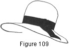
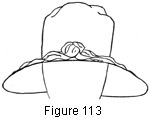
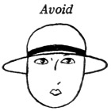
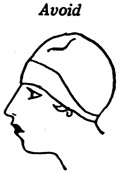

1930—Millinery Processes
by Carlotta M. Brown
SELECTION OF HATS
PRINCIPLES OF DESIGN TO BE CONSIDERED
The choice of the hat is one of the most difficult problems to be met in the selection of a wardrobe. Certain essential points must be given special thought. The hat must be selected for the individual, with her characteristics kept well in mind, and it usually should be considered as a part of a whole costume. It should not invite special attention to itself, but should serve as a frame for the face and bring added attractiveness to the wearer. The hat that is so extreme in line or in color as to overpower and show the individual to disadvantage should be avoided.
The pronounced lines of the face or defects of features must not be repeated in the lines of the hat, for repetition emphasizes and makes still more prominent the unpleasing feature. For the same reason a sharp contrast in line must be avoided. Therefore the wise choice lies between the two extremes. The face must always remain the center of interest, with its attractive lines brought out to advantage and the unattractive ones placed in the background by lack of emphasis.
That this may be assured and the hat be satisfying, it must embody good design; for the principles of design must be applied in hat selection and construction as well as in any other form of artistic expression. These principles are rhythm, proportion, harmony, balance, and emphasis, or center of interest.
Rhythm results when the lines of the brim, crown, and trimmings carry the eye uninterruptedly around the hat in an easy, graceful movement (Fig. 108).
Proportion is the relation of the parts of a hat to each other and to the hat as a whole. In general, the proportions of any hat will appear more satisfactory when variety in spacing the parts is used. Irregular features may be made to appear quite regular by the use of lines so placed that the attention is directed away from the irregularities (Fig. 109).
Harmony is obtained by the blending of shape, material, and trimming, not only to give a pleasing relationship but also to give the feeling that each is a part of the whole, and that they all belong together (Fig. 110).
Balance is a restful effect obtained by the correct proportion of the two sides of the hat so that equal attraction is created on either side of the center. There are two definite types of balance: formal and informal.
Formal balance is obtained by the exact duplication of the lines and the trimming on the two sides of the hat (Fig. 111).
Informal balance is the equalizing of extreme brim width or roll on one side of a hat by the weight or mass of trimming placed on the other side. This creates the same amount of attention to each side of the center (Fig. 112).
Emphasis, or center of interest, is used to attract the eye to the most important point in any arrangement (Fig. 113).
LINES FOR BRIMS AND CROWNS
Brims may be made in a variety of shapes and widths. They may be large, medium, or small; they may droop or turn upward; the outer line may be regular or irregular ; and they may be finished with a soft covering or a tailored one. All these points should be determined by the requirements of the individual.
The brimless hat or the hat with the straight, regular brim should be worn only by the person with regular, well-modeled, but delicate features.
 The
hat with the irregular, or broken, brim line is the most universally becoming,
not only because it may be worn by the great group of women with
unpro-nounced facial characteristics, but because its irregularity modifies
the lines in three difficult facial groups: the round, the square, and
the angular-featured (Fig. 114).
The
hat with the irregular, or broken, brim line is the most universally becoming,
not only because it may be worn by the great group of women with
unpro-nounced facial characteristics, but because its irregularity modifies
the lines in three difficult facial groups: the round, the square, and
the angular-featured (Fig. 114).
The crown is an important factor in selection and should receive the same thought in regard to its lines that is given the brim. If the crown is out of proportion in its relation to the brim, the face, or the size of the head, the hat will be unattractive; the crown should be as wide as the face, but its height varies with the width of the brim and the lines of the face.
HATS FOR DEFINITE TYPES
For the Woman with a Round Face
Choose
Hats with an irregular brim line with upward roll on one side and with a slight droop on the opposite side. The curved line at the side of the hat carries the eye upward and gives length to the face. The irregularity of the brim avoids the repetition of the circular lines, thus giving variety.
Hats with crowns of medium height of the less severe type. The broken lines in the crown do not emphasize the roundness of the face.
Hats with trimmings which direct the eye upward, to add height to the face line.
Avoid
Brimless hats.
Hats with decidedly round shapes such as a sailor with a flat round crown, for both the brim and the crown repeat the circles in the face and decrease its length.
Any hat with a straight front-brim line, for this adds to the width of the face and shortens its length.
Hats with crowns of the low, round type.
Hats with trimmings so placed that the eye is directed across the hat. This emphasizes the width of the face.
For the Woman with a Square Face
Choose
The hat with irregular brim, with its broken lines. The brim should be of medium width and should roll on one side with two or more soft curves on the opposite side, causing a slight brim droop, which shades the face and gives softness to its broad lines. Care must be taken in shaping the brim line to avoid repeating the square lines of the face.
Hats with crowns of semi-soft type, draped slightly to one side.
Hats with trimmings of medium weight and softness arranged in informal balance. Formal balance increases the squareness of the face.
Avoid
The stiff hard hat of ungraceful lines.
The small hat, with brim upturned from the face, for this exposes too much of the face.
Hats with crowns square or of square proportions, for these emphasize the width of the chin and the cheek bones. However, the square lines of the face, decidedly opposed by the lines of the hat, will produce the same effect as in repeating the lines of the face.
Hat trimmings, such as stiff quills and wings.
For the Woman with a Large Face
Choose
A hat with a rather wide brim. The brim may turn at the side or back, or it may droop slightly, depending entirely upon the height and general build of the individual. If the wearer is short and inclined to stoutness, then the roll should come at the side or the back to add height; if she is tall and angular, then the hat should droop slightly to decrease height. Hats with semi-soft crowns.
Hats with trimmings of moderate size.
Avoid
Close-fitting hats, which are out of proportion to the size of the head and face and which overemphasize the largeness of the features.
Hats with severe close-fitting crowns; also, crowns that are smaller at the top than at the base, for these tend to make the face look still larger.
Hats with trimmings that are very small and thus out of proportion to the size of the face and head.
For the Woman  with a Small Face
with a Small Face

Choose
The small hat with brim turned away from the face, or with upturned and close-fitting back and slightly drooped front.
Hats with crowns that are close-fitting.
Hats with the daintier trimmings.
Avoid
The large heavy hat, which gives the effect of top-heaviness.
Hats with crowns that are heavy and out of scale with the face.
Hats with trimmings that are large and heavy.
For the Woman with an Oval Face
Choose
The hat with irregular brim line with a roll on one side and a droop on the opposite side. The broken brim line decreases the width of the upper part of the face and makes the face appear less oval.
Hats with soft crowns pulled slightly to one side.
Hats with trimmings arranged in informal balance.
Avoid
The brimless hat.
Hats with upturned brim with points at the sides. The points call attention to the width of the upper portion of the face.
Hats with crowns that come to a point at the top.
Hats with trimmings of formal balance.
For the Woman with a Narrow, Pointed Face
Choose
The hat with slightly drooping brim of moderate width to give a softening effect to the features.
Hats with semi-soft crowns of medium height.
Hats with trimmings that are small and soft.
Avoid
Hats with tall, thin effects with an upward roll from the face.
Hats with crowns of high, tailored style.
Hats with trimmings of stiff feathers and bows.
For the Woman with Sharp, Angular Features
Choose
The hat of medium size with a slightly drooping brim line to shadow the face, add softness to it, and decrease its length.
Hats with a soft crown and a slight drape.
Hats with trimmings that are soft and fluffy.
Avoid
Hats with a severe brim line or a brim which rolls from the face.
Hats with severe crowns and harsh lines.
Hats with trimmings of the stiff, angular type.
DEFECTIVE FEATURES
For the Woman with an Upturned Nose
Choose
The hat of average size with a slightly drooping front line. This will neutralize the upward turn of the nose. A close-fitting turn of the brim at the back will give variety of line.
Hats with semi-soft crowns.
Avoid
The hat with upturned brim, which draws attention to the upward turn of the nose by repeating the same line.
Hats with severely tailored crowns.
For the Woman with a Prominent Nose
Choose
The hat of average size with a slightly drooping, wider front brim and an upward-turned back brim which stands out from the crown slightly. This gives balance to the face and makes the nose less conspicuous.
Hats with soft crowns slightly higher at the front.
Avoid
The hat that fits the head closely. This exposes too much of the face and makes impossible the softening effect gained by a brim line.
Hats with crown lines slanting backward off the face.
For the Woman with a Long, Pointed Nose and Receding Forehead
Choose
The hat of medium size with brim which rolls softly away from the face instead of directly off the face, and forms a graceful front line.
Hats with soft crowns with a straight but soft front line.
Avoid
Hats with long, pointed front brim and narrow side brims with a decided droop but no back line.
Hats with crowns with a receding effect at the front.
For the Woman with a Receding Chin
Choose
A hat with a brim line of medium width with a slight front droop and close-fitting back roll. The upward turn at the back of the brim gives balance and makes less conspicuous the difference in size between the nose and the chin.
Hats with rather soft crowns with upward line at front and soft folds at the back.
Avoid
Close-fitting hats, or brimless hats, with receding front line. Both of these types emphasize the receding line of the chin.
Hats with severe crowns with a backward sweep to the front of the crown.
For the Woman with a Prominent Chin
with a Prominent Chin

Choose
A hat with a rather narrow front brim with higher back brim fitted closely against the crown. The high back line gives balance and directs the eye away from the prominent chin.
Hats having crowns with soft, rounded lines which attract attention away from the prominent chin.
Avoid
Close-fitting hats, or hats with no back-brim line. The flat effect at the back makes more prominent the protruding chin, because of lack of balance.
Hats with crowns with a high front line and a flat back line.
For the Woman Wearing Large Glasses
Glasses present their own particular problem in hat selection and are treated much as a defect of feature would be. They add extra circles and square corners to the face; but they also subdue the expression of the eyes and cover the temples, all of which are points of beauty.
Choose
The hat of medium width with irregular brim line. The broken brim line adds softness and turns the attention from the circular lines formed by the glasses.
Hats with semi-soft or soft crowns.
Avoid
Brimless hats, or brims so narrow that the corners of the glasses extend beyond the brim.
Hats which roll severely from the face.
Hats with crowns of the skullcap type.
For the Elderly
Elderly Woman
Woman


Added years and the changes they bring in the texture of the skin and the lines of the face present yet another problem. There is a tendency on the part of many elderly women to choose the hat of severe, stiff lines. Nothing accentuates the passing of youth more than a harsh, stiff line or fabric, so these should be avoided.
Choose
The smaller hat of irregular brim line with covering of soft fabric. The broken line of the brim and the softening effect of the fabric work together to. give smoothness to the lines of the face and tone to the aging skin.
Hats with soft, draped crowns.
Avoid
Stiff, hard lines in the hat. This type of hat brings out the deep lines of the face more prominently.
Hats with harsh, shining fabrics.
Hats with severe tailored crowns.
PERFECTLY MODELED FEATURES
Perfectly modeled features are very rare, and when they are bestowed with a figure of exact proportions the combination is one that presents the individual with a very wide choice in the selection of a hat.
THE INFLUENCE OF TRIMMINGS
The type of trimming must also be considered. It should be in harmony with the line, texture, and color of the hat and should be suited to the individual. The tailored or semi-tailored type of trimming, such as ribbon bows and ribbon or feather ornaments and fancy pins, is suited to the street, or general-utility, hat. The more elaborate decorations or soft feather trimmings are always more appropriate for the dress or fancy hat.
Trimmings should be in proportion to the size of the head and face and should never be placed so that an outstanding feature of the face is overemphasized. Trimmings that are very small should not accompany the large face, for the contrast is too great. Trimmings of moderate size are in better taste. By the same principle, dainty trimmings are to be chosen for the small, delicate face.
The apparent decreasing of the width of the broad face may be accomplished by the careful placing of the trimming so as to suggest height instead of width, and the apparent decreasing of the too long face may be accomplished by the placing of the trimming so as to suggest width instead of height. However, care must be taken to avoid extremes in these lines.
Figure 129. Round face. Choose a trimming which directs the eye upward, and avoid a trimming which carries the eye across.
The lines of narrow, pointed faces or those with angular features should not be repeated in the trimming chosen for the hat; but the trimming should be of the kind to soften the lines of the face.
Figure 130. Angular features. Choose a trimming which softens, and avoid an angular trimming.
CHILDREN'S HATS
The hats worn by the younger girls are just miniature copies of those worn by their mothers and older sisters. Styles prominent in millinery for the grown-ups are modified and varied, to be adaptable for the use of the younger group. If high crowns are being worn in adult millinery, then the high crown is seen in small models displayed for children. This is true also in the hat coverings. If many soft or shirred effects are in style, soft or shirred effects lead in millinery for children. Usually, however, hats for the younger group are less extreme and are kept as simple as possible.
Hats for children are of two definite classes: dress and school hats, corresponding to dress and street hats for the adult. The most popular hat for school wear is the tailored type, very plain with simple ribbon trimming. These may be either in felt or in straw braid, according to the season, and are built for hard wear. The mushroom or slightly drooping brim is desirable for summer, since it protects the face from the sun and is generally becoming. The tam is a great favorite for early spring and fall wear and for early winter wear. For the making of the different types of tams see page 43. Smaller sectional and soft crowns may be modeled after the adult crowns, using individual head measurements (see Crown Coverings). The cost of the tam is so moderate when made at home that it is well worth the purchase of the small piece of material required. Fabric left over from a dress or a coat may also be utilized for this purpose.
POINTS TO BE REMEMBERED
The costume may be made or marred by the choice of a hat.
The hat should never be purchased for itself, but as a part of the costume and to furnish a fitting frame for the face.
The hat should be chosen to fit the occasion upon which it is to be worn.
Select the hat that will bring out the good points of the features and place the unattractive points in the background.
The hat should be worn firmly on the head, but not so far over the forehead as to cover the eyes, for very often they are the most beautiful and attractive part of the face, and should be seen. A hat in that position is also extremely uncomfortable.
If the hat is to droop on the right or left side, then the droop should be placed in the brim during the process of construction. The hat never should be pulled to either side of the head to form this dip. If this is done, the hat is thrown out of line.
The texture of the material from which a hat is made must be considered in its relation to the individual. These materials have much to do with the apparent increasing or decreasing of the size and softness of the hat. The individual of the delicate type should choose the more dainty materials; the woman with larger features may choose materials having more weight and firmness. Fabrics of dull finish are more easily worn than are those with a shiny surface. Hats of dull-finished materials also appear smaller and less bright in color than those made from material with a brilliant finish.
Extremes in the treatment of any type of trimming, such as angular bows or long, stiff feathers, are unattractive and unbecoming.
Formal balance in trimming emphasizes the width of the face.
Informal balance in trimming tends to decrease the width of the face and makes irregularities of features less conspicuous.
The drooping brim decreases the length of the face.
Low back-brim lines concealing the neck make the face seem shorter.
The brow line is the line coming directly over the eyes. It should have special attention in hat selection.
Stand before the mirror in making the final choice, for it is most important to see the hat as a part of the larger costume unit and in its relation to the figure.